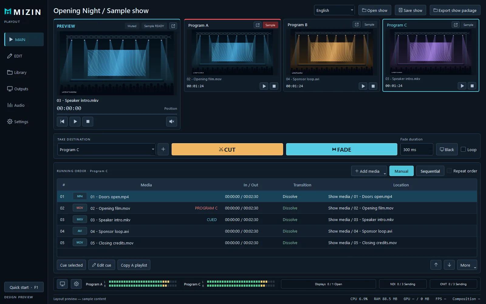
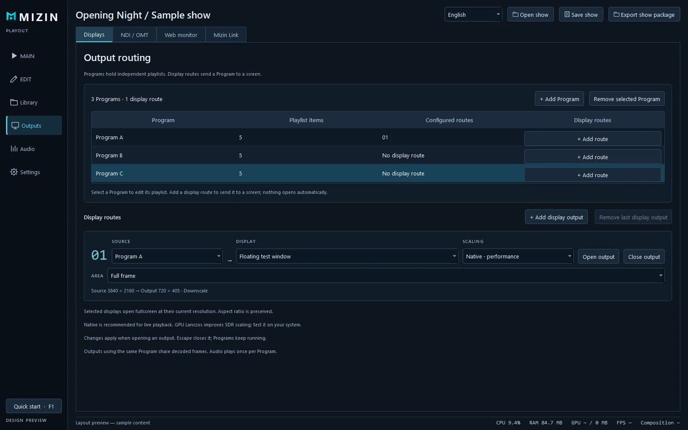
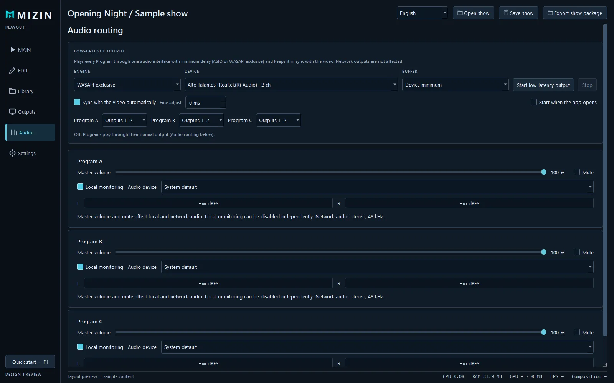

Live video playout, built for the show.
Playout de vídeo ao vivo, feito para o show.
Mizin Playout runs your event's videos with independent Programs, instant CUT and FADE, multiview, screen outputs, NDI and OMT, a browser monitor for the whole team and low-latency audio — natively on Windows, without converting your files.
O Mizin Playout roda os vídeos do seu evento com Programs independentes, CUT e FADE na hora, multiview, saídas para telas, NDI e OMT, monitor no navegador para toda a equipe e áudio de baixa latência — nativo no Windows, sem converter seus arquivos.

Everything the operator needs, on one desk
Tudo o que o operador precisa, numa só mesa
Designed for concerts, corporate events, churches and LED stages: fast to operate, honest about what is on air.
Pensado para shows, eventos corporativos, igrejas e palcos de LED: rápido de operar e claro sobre o que está no ar.
Independent Programs
Programs independentes
Add as many Programs as the show needs, each with its own playlist, manual or sequential mode, loops, trims and transitions.
Adicione quantos Programs o show precisar, cada um com sua playlist, modo manual ou sequencial, loop, recortes e transições.
Verified takes
Disparos verificados
Preview checks the file and the In point before you take it. CUT and FADE (Ctrl+Enter / Ctrl+Space) never stop the other Programs.
A Prévia confere o arquivo e o ponto de entrada antes do disparo. CUT e FADE (Ctrl+Enter / Ctrl+Espaço) nunca param os outros Programs.
Detachable decks + tally
Decks destacáveis + tally
Pop any deck into its own window on another monitor, fullscreen with F11. A red ON AIR tally shows what is live.
Solte qualquer deck numa janela própria em outro monitor, tela cheia com F11. O selo vermelho NO AR mostra o que está no ar.
Screens, mirrors and GPU scaling
Telas, espelhos e escala por GPU
Send each Program to one or more screens. Mirrors share frames — no extra decoding. Native or Lanczos GPU scaling.
Envie cada Program para uma ou mais telas. Espelhos compartilham quadros — sem decodificar de novo. Escala nativa ou Lanczos por GPU.
Network video
Vídeo pela rede
Publish every Program as NDI and Open Media Transport with audio, for switchers, recorders and streaming.
Publique cada Program em NDI e Open Media Transport com áudio, para switchers, gravadores e streaming.
Web monitor for the team
Monitor web para a equipe
Directors and crew watch the Programs live on phones and tablets over the local network. View only, protected by an access code.
Diretores e equipe assistem aos Programs ao vivo no celular e no tablet pela rede local. Só visualização, protegido por código.
Low-latency audio
Áudio de baixa latência
WASAPI exclusive output from 2 ms buffers, each Program on its own output pair, automatically synced with the video.
Saída WASAPI exclusiva a partir de buffers de 2 ms, cada Program no seu par de saídas, sincronizado automaticamente com o vídeo.
Your files, untouched
Seus arquivos, intactos
MP4, MOV, MKV, AVI, ProRes, HEVC… played natively with hardware decoding when available. No mandatory conversion.
MP4, MOV, MKV, AVI, ProRes, HEVC… reproduzidos nativamente com decodificação por hardware quando disponível. Sem conversão obrigatória.
Several machines, one show
Várias máquinas, um show
Pair the playout PCs of an event with a code. The master sends the show and every media file, verified, to all of them. Backup mirroring and synced playback are next.
Pareie os PCs de playout do evento com um código. O mestre envia o show e todas as mídias, conferidas, para todos. Espelhamento de reserva e reprodução sincronizada vêm a seguir.
Autosave, relink and show packages
Salvamento automático, mídias religadas e pacotes
Unsaved changes are copied every few seconds and restored after a crash. Moved media is found again by name, and one click packs the show with all its media to take anywhere.
Alterações não salvas são copiadas a cada poucos segundos e restauradas após uma queda. Mídias que mudaram de lugar são encontradas pelo nome, e um clique empacota o show com todas as mídias para levar a qualquer lugar.
Safe, optional updates
Atualizações seguras e opcionais
The app tells you when a new version exists. Signed metadata and file hashes are verified; nothing installs during a show.
O app avisa quando existe versão nova. Assinatura e hashes são verificados; nada é instalado durante o show.
Outputs and network, organised
Saídas e rede, organizadas
- Programs and display routes listed side by side; nothing opens on a screen until you ask.
- Programs e rotas de tela lado a lado; nada abre numa tela até você pedir.
- Fullscreen on the chosen monitor at its real resolution, aspect ratio preserved.
- Tela cheia no monitor escolhido, na resolução real, proporção preservada.
- NDI / OMT senders and the web monitor never start by themselves when a show is opened.
- Os envios NDI / OMT e o monitor web nunca começam sozinhos ao abrir um show.


Audio that lands with the picture
Áudio que chega junto com a imagem
- Per-Program volume, mute and local monitoring; network audio is independent.
- Volume, mudo e monitoramento local por Program; o áudio de rede é independente.
- Low-latency output measures video delay and adds only what is needed, plus a fine adjust for projectors and LED processors.
- A saída de baixa latência mede o atraso do vídeo e soma só o necessário, com ajuste fino para projetores e processadores de LED.
- If the interface is unplugged, audio falls back to the normal output automatically.
- Se a interface for desconectada, o áudio volta sozinho para a saída normal.
Download
Baixar
Free preview for Windows 10/11 x64. Choose the installer or the portable ZIP — it is the same application.
Prévia gratuita para Windows 10/11 x64. Escolha o instalador ou o ZIP portátil — é o mesmo aplicativo.
Installer (Setup)
Instalador (Setup)
Installs for your user account, with Start menu shortcut and uninstaller. No administrator permission needed.
Instala na sua conta de usuário, com atalho no menu Iniciar e desinstalador. Não precisa de permissão de administrador.
Download SetupBaixar Setup · 54.6 MBSHA-256 1a805bfcd65ef4852a0ce7e9bb915c49341fda759b2e3992d7db7b1a67b106f6
Portable (ZIP)
Portátil (ZIP)
Extract anywhere — even a USB drive — and run MizinPlayout.exe. Use "Start portable" to keep settings beside the app.
Extraia em qualquer lugar — até num pendrive — e abra o MizinPlayout.exe. Use "Start portable" para guardar as configurações junto do app.
Download portableBaixar portátil · 54.5 MBSHA-256 0c9523137f7a5939e239051f9461e45c32f1939cfd3f33d5363428c7b6e6f29b
Support the project
Apoie o projeto
Mizin Playout is built by people who run real shows. Sponsorship and partnerships fund code signing, macOS/Linux versions, remote control and long-run qualification on more hardware.
O Mizin Playout é feito por quem opera shows de verdade. Patrocínios e parcerias financiam a assinatura digital, versões para macOS/Linux, controle remoto e testes de longa duração em mais equipamentos.
Roadmap
Próximos passos
- Code-signed releases
- Versões com assinatura digital
- ASIO / Dante multichannel
- ASIO / Dante multicanal
- Authenticated remote control
- Controle remoto autenticado
- macOS and Linux
- macOS e Linux
Beta testers
Beta testers
Use the preview on rehearsals and tell us what happened — hardware, files and screens help us most.
Use a prévia nos ensaios e conte o que aconteceu — equipamentos, arquivos e telas ajudam muito.